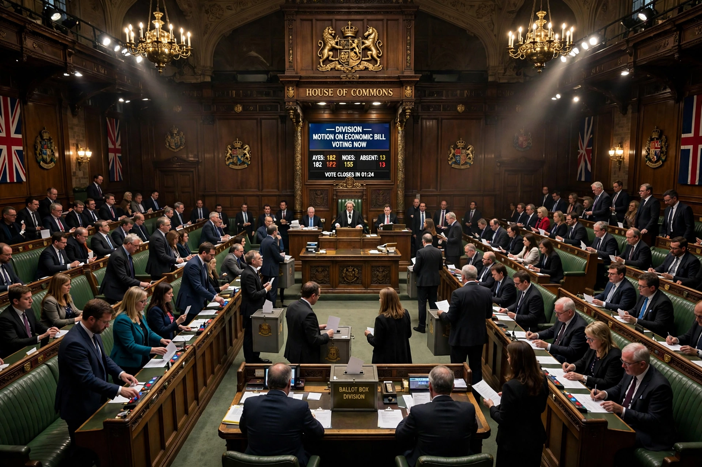

| Motion of no confidence | |
|---|---|
 | |
| Type | Parliamentary procedure |
| Purpose | Withdraw legislative confidence from a government or minister |
| Effect if passed | Resignation of the government, or a general election |
A motion or vote of no confidence (also called a vote of censure) is a parliamentary motion demonstrating to the head of state that the elected parliament no longer has confidence in the appointed government. In a parliamentary system, the government holds office only while it commands the confidence of the legislature; losing a confidence vote obliges the government to resign or seek a dissolution and fresh election.
Typically the motion is tabled by the opposition and, if carried — usually by simple majority — the prime minister and cabinet must step down. Defeat on measures declared matters of confidence, such as the budget, can have the same effect. In the United Kingdom, James Callaghan's government fell by one vote in 1979, triggering the election that brought Margaret Thatcher to power. In Canada, governments fell on confidence votes in 1979, 2005 and 2011.
Some constitutions, notably Germany's Basic Law (Article 67) and those of Spain, Belgium and others, require a constructive vote: parliament can dismiss the chancellor or prime minister only by simultaneously electing a successor with an absolute majority. The device, designed to avoid the instability of the Weimar Republic, ensures a government can be removed only when an alternative majority exists. Germany has seen one successful use, in 1982, when Helmut Kohl replaced Helmut Schmidt.